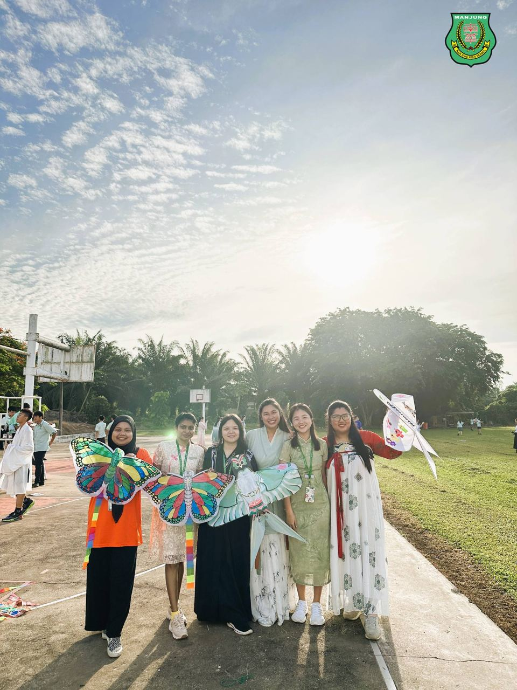
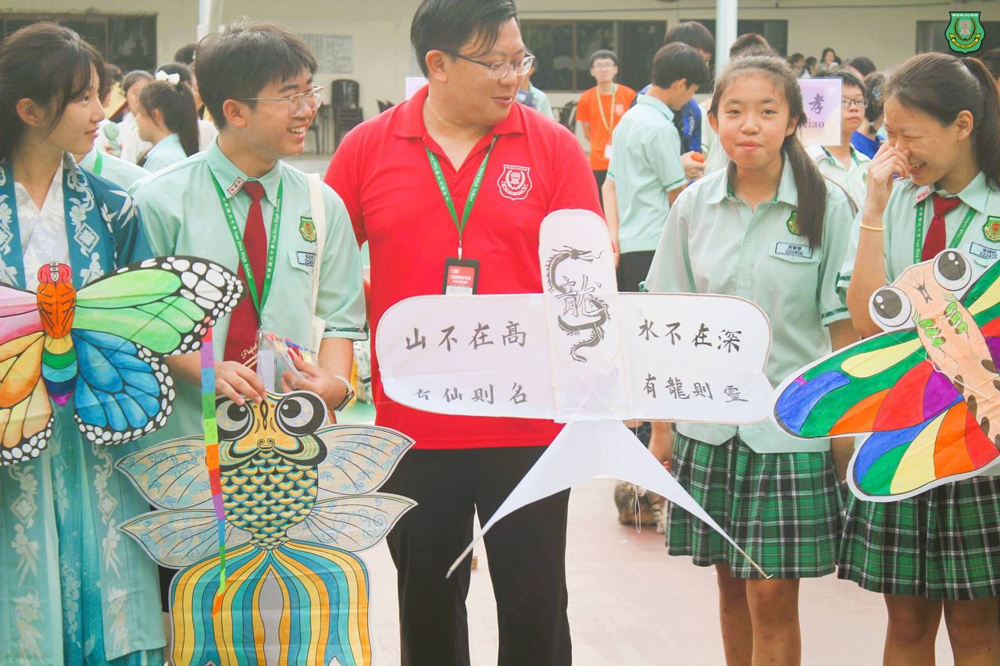
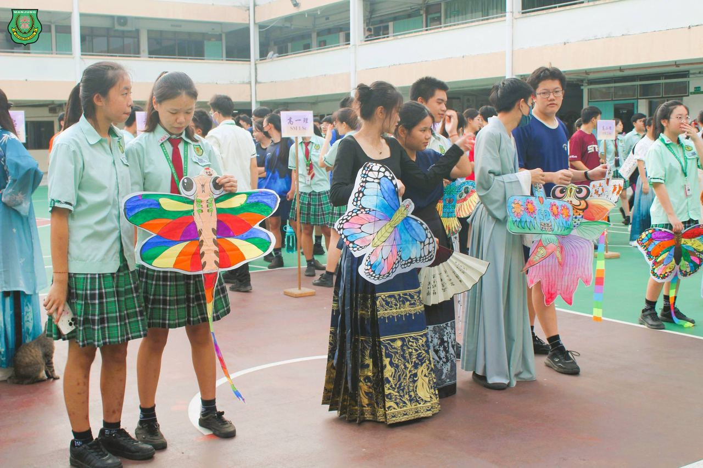
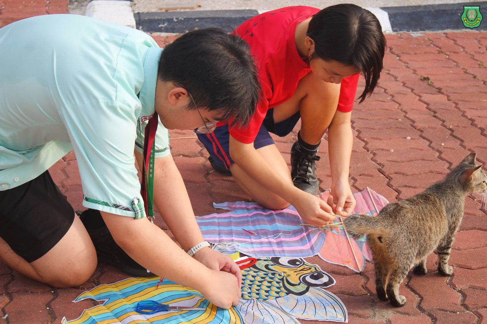
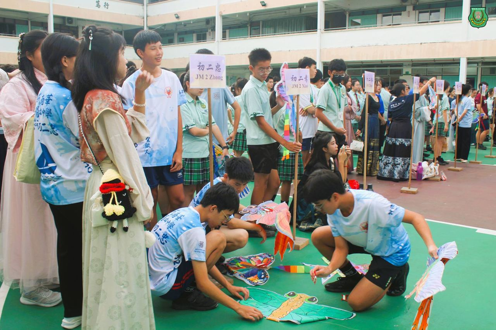
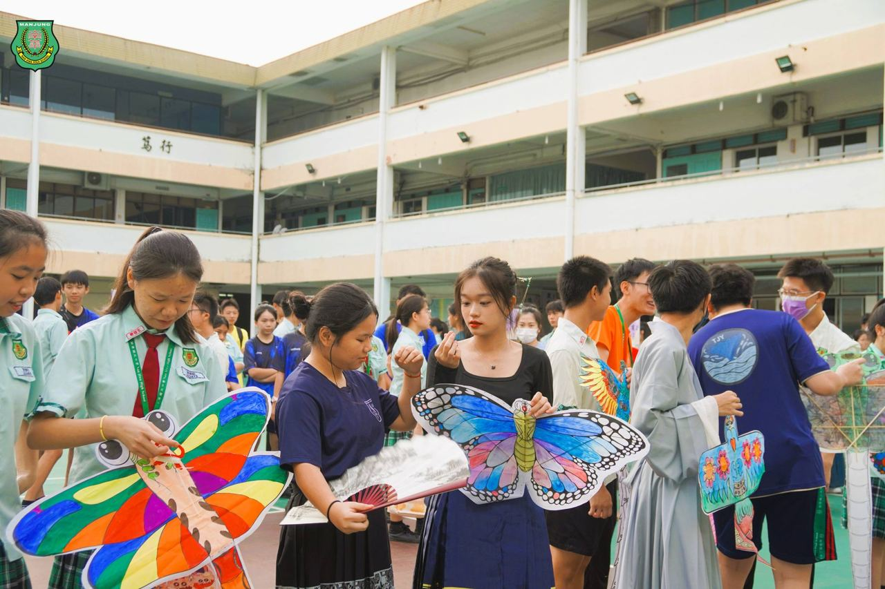
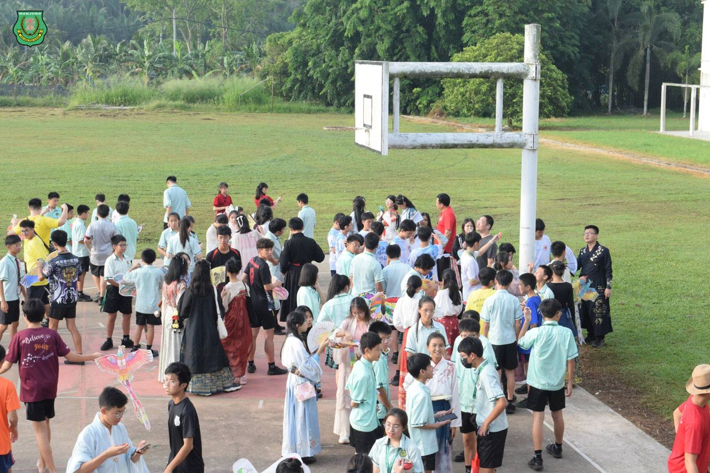
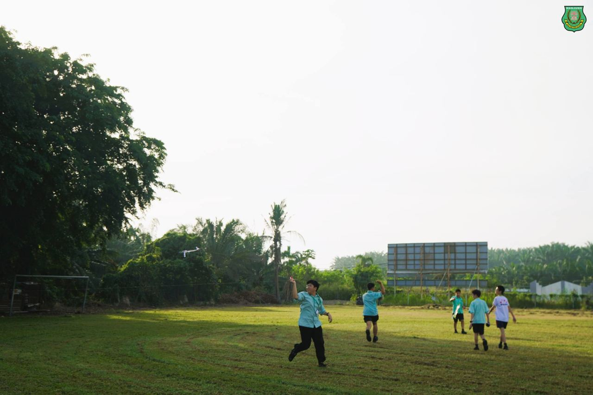

南华独中端午节园游会
南华独中端午节园游会
纸鸢放飞传统之美添趣味
南华独中董家教齐聚共度端午，举办园游会以及一系列相关的端午节活动，并对外开放邀请校外人士共襄盛举，一起度过了这场具有深厚历史意义的传统节日。
南华独中校长陈丽冰博士在开幕仪式上，详细讲述了端午节的由来。她、提到楚国爱国诗人屈原及其文学成就，并提及中国传统文化经常与历史有着紧密的连结，提醒大家在过节时不忘关注传统文化的由来。
南华独中技职教育中心与联课处也举行了纸鸢比赛。五彩斑斓的纸鸢在蓝天白云下飞舞，为端午节活动增添了更多的趣味和色彩。随后，丰富多彩的技职活动和小游戏让师生们在参与中感受传统文化的魅力。技职活动包括机器龙舟、古装拍摄、端午美甲、鱼我同在以及绿意造景等。小游戏则有飞花令、射五毒、夹红豆、智投壶和彩端午等。
活动中，还特别安排了话剧表演《屈原轻喜剧》，为大家带来了一场既有教育意义又充满欢笑的演出，生动再现了屈原的故事和精神。此外，家长联谊会主席叶燕妮及理事们特别准备了亲手包的粽子，现场分发给学生们品尝，令大家在欢声笑语中感受节日的温馨与传统美食的魅力。
本次端午节活动不仅提供大家了解节日的历史渊源和文化内涵的平台，还通过各种互动活动增进了彼此之间的感情，打造浓厚的节日氛围与和谐校园风气。
#端午节园游会 #纸鸢 #传统节日
#南华独中 #曼绒 #实兆远







